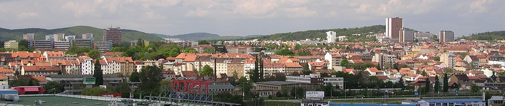

Brno - Královo Pole
Královo Pole (německy Königsfeld, v hantecu Kénig či Kénik,
lidově často zkracováno jako KrPole)
je městská čtvrť na severu statutárního města Brna.
Původně samostatné město bylo k Brnu připojeno v roce 1919,
od 24. listopadu 1990 je součástí samosprávné městské části Brno-Královo Pole.
Žije zde přes 21 000 obyvatel.
V roce 2022 byla vyhlášena městská památková zóna,
která zahrnuje jak jádro původní vsi (Mojmírovo náměstí),
tak plánovaně založenou městskou zástavbu okolo Slovanského náměstí.

Video průvodce-youtube
Zpět
Ostaní stránky:
- Brno - Bosonohy
- Brno - Žebětín
- Brno - Útěchov
- Brno - Chrlice
- Brno - Ivanovice
- Brno - Starý Lískovec
- Brno -Jundrov